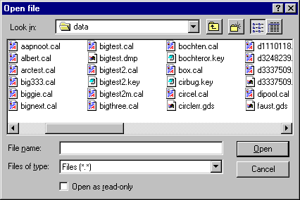
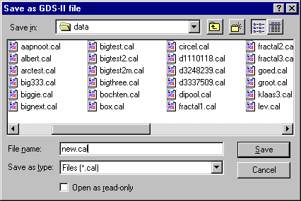
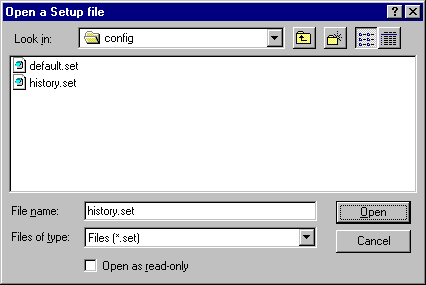
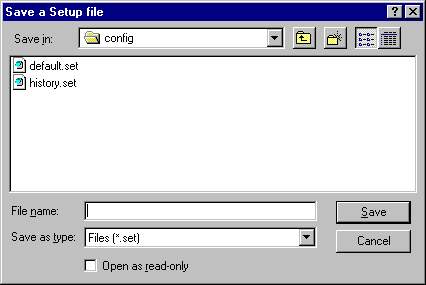
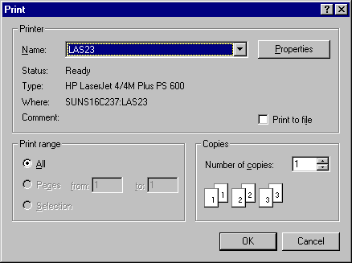
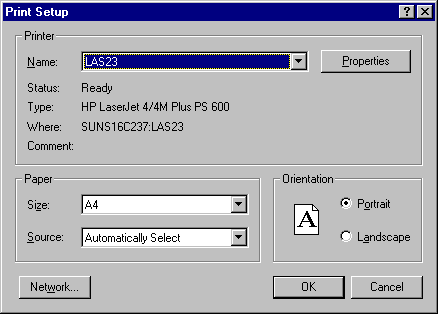

With the File menu, data and setup files can be loaded, saved, merged,
printed and closed.
Click in the picture below on one of the menu-commands for info.
This menu can be used to open a datafile of a specific type. You can choose
one of the three types. The dialog below appears, showing only the files of
the type you choose. To view files of all types, as in the picture below,
choose the file open command from the toolbar.

This item is used to open GDS-II files. The dialog shows only files with
the extension .cal.
This item is used to open Key files. The dialog shows only files with
the extension .key.
This item is used to open Flash files. The dialog shows only files with
the extension .??m.
Saves the file currently in memory.
Saves the file currently in memory in one of the three file formats. A text
dump can also be chosen, to inspect the file manually.
The file in memory keeps the old name and type, also when a file is saved
in a different format or with a different name. The dialog shows only the
files of the type that was chosen in the menu. See dialog in picture below,
which was displayed when Save As... -> GDS-II was chosen.

Saves the current file in GDS-II format. The GDS-II format is not capable of
saving arcs. Polygons containing arcs are not saved.
Saves the file in memory in Key format.
Saves all rectangles in the file in memory in Flash format.
Saves the file in text format.
Import loads a new datafile and merges it with the one in memory. The filename
remains the one in memory. You can load three different file types. For more
info on loading files see dialog at
Open file topic.
Imports a GDS-II file and merges it with the current file.
Imports a Key file and merges it with the current file.
Imports a Flash file and merges it with the current file.
Closes the file in memory.
Loads an other setupfile. The setupfiles contain the factor settings,
the transformation settings, the gridsettings and the layer settings (colors,
patterns and names).
Clicking this menu-item brings up the next dialog, showing only .set
files.

This menu-item saves the current setup to a file specified by the user. It
brings up the dialog below, showing only the .set files. The name
can be typed in the edit box File name. The extension .set is
automatically added, even if an other extension is specified.

Shows the dialog below with which the current file can be sent to a printer.

Show the dialog below to set up a printer for printing.

Closes file (if open) and exits the program.
Last five files used are in this history list. Selecting one of the files
immediately loads it.